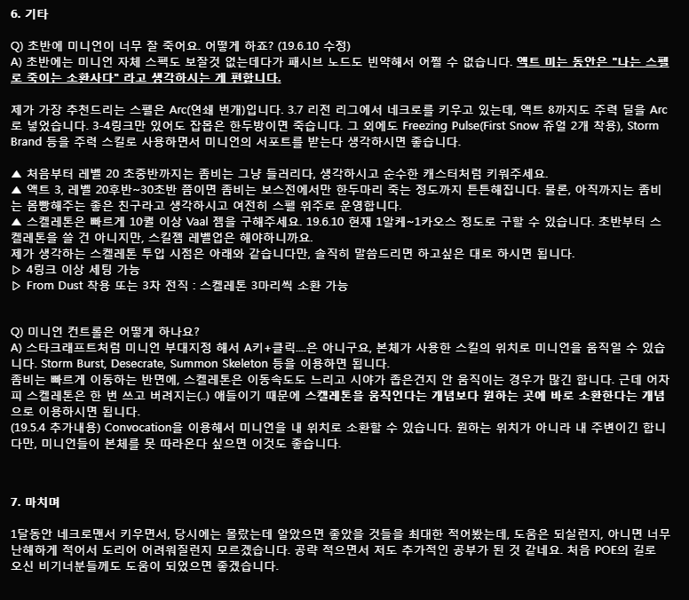

5. 운영 방식
이 네크로맨서의 핵심노드는 Elemental Equilibrium입니다.
Fire, Cold, Lightning 중 1개의 속성으로 적을 공격하면, 적의 해당 속성의 저항력은 25 높여주고,
다른 속성의 저항력은 50 낮춰주는 효과를 가지고 있습니다.
앞에서 제가 스킬 설명하면서, 나중에 다시 말할 거라고 언급한 게 3개 있었습니다.
Added Fire Damage, Hatred, Storm Burst입니다. Added Fire Damage 서포트와 Hatred 오라로 미니언이 파뎀+콜뎀을 입히고,
본체는 Storm Burst로 라뎀을 주는 것과 동시에 Elemental Weakness가 발동되어 레지를 낮춥니다.
본체의 Storm Burst를 통해 적의 파이어/콜드 레지를 낮추고, 미니언이 파뎀+콜뎀을 더 세게 때린다, 이런 컨셉입니다.
맵핑하면서 째깐둥이 잡을때는 어차피 금방 죽이니까 큰 상관이 없고, 보스전에서 Storm Burst를 갈겨주시면 됩니다.
Q) 미니언이 파뎀+콜뎀으로 한 방 때리면 또 EE가 발동돼서 파이어/콜드 레지가 높아지는 거 아니에요?
A) 미니언은 EE를 발동시키지 않습니다. 즉, 미니언이 아무리 때려봐야 파이어/콜드 레지가 높아지지 않는단 소리죠.
(관련 출처: https://www.pathofexile.com/forum/view-thread/19803/page/4#p528448)
